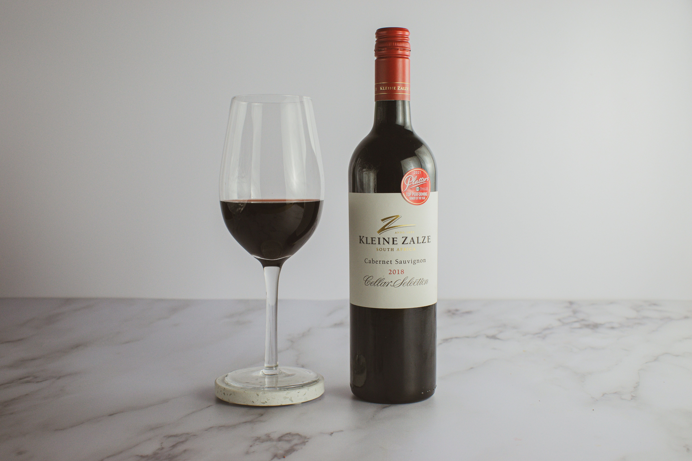
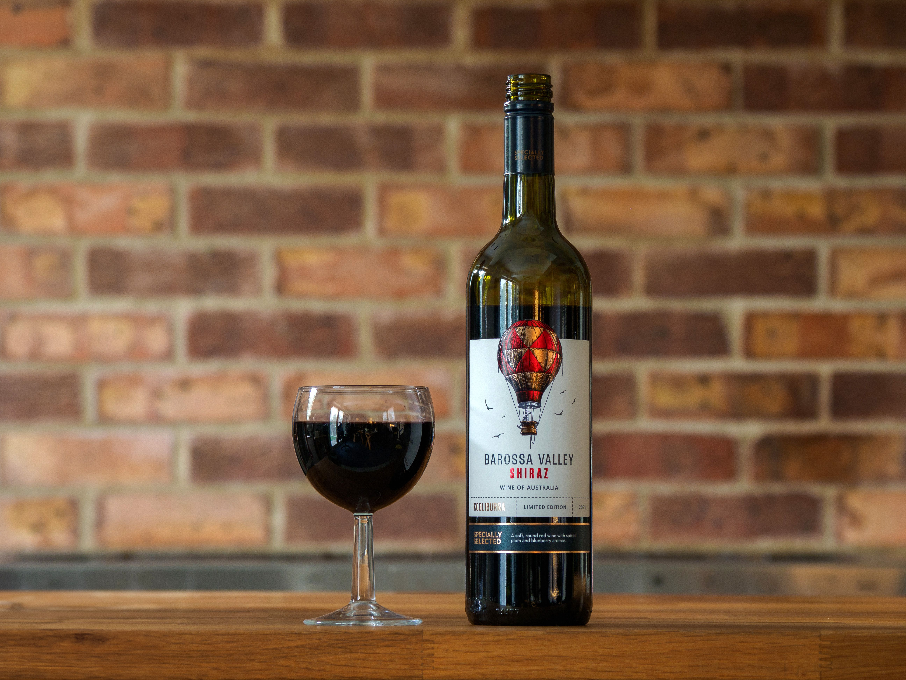

Our Wine Collection
Discover the Central Wines collection, carefully created to bring quality, character and memorable experiences to every occasion.
1. Central Reserve Cabernet Sauvignon

Vintage: 2024
Origin: Stellenbosch, Western Cape, South
Africa
Grape: 100% Cabernet Sauvignon
Winemaker: Kluivert Mapah
Alcohol: 14.5% ABV
Style: Full-bodied red wine
About the Wine
Central Reserve Cabernet Sauvignon is a bold and elegant red created from carefully selected Cabernet Sauvignon grapes from the Stellenbosch region. The region's mountainous terrain, well-drained soils and established winemaking traditions make it well suited to Cabernet Sauvignon.
Food Pairing
Best enjoyed with:
Grilled steak
Roasted beef
Lamb
2. Central Estate Sauvignon Blanc

Vintage: 2025
Origin: Cape South Coast, Western Cape, South
Africa
Grape: Sauvignon Blanc
Winemaker: Thomas Ngomalala
Alcohol: 13% ABV
Style: Dry white wine
About the Wine
Central Estate Sauvignon Blanc is a fresh and expressive white wine designed to highlight the natural character of Sauvignon Blanc.
Tasting Notes
Fresh aromas of passion fruit, lime, green apple and tropical fruit lead into a crisp palate. The wine has refreshing acidity and a clean, lingering finish.
Food Pairing
Seafood
Grilled fish
Sushi
Fresh salads
3. Central Signature Rosé

Vintage: 2025
Origin: Paarl, Western Cape, South Africa
Grapes: 70% Shiraz, 30% Grenache
Winemaker: Chilavert Mapah
Alcohol: 12.5% ABV
Style: Dry Rosé
About the Wine
Central Signature Rosé is designed as a refreshing and versatile wine for relaxed occasions. The fruit-forward style combines the character of Shiraz with the bright fruit profile of Grenache.
Tasting Notes
The wine shows aromas of strawberry, raspberry, watermelon and red cherries. On the palate, it is fresh and vibrant with gentle acidity and a crisp finish.
Food Pairing
Charcuterie
Salads
Seafood
Light pasta
4. Central Premium Shiraz

Vintage: 2023
Origin: Swartland, Western Cape, South
Africa
Grape: 100% Shiraz
Winemaker: Chilavert Mapah
Alcohol: 14.5% ABV
Style: Full-bodied red wine
About the Wine
Central Premium Shiraz is a rich and expressive red wine inspired by the character of the Swartland. Shiraz has become strongly associated with the region, where the climate is particularly suitable for the variety.
Tasting Notes
The wine offers aromas of blackberry, blueberry, plum and black pepper, supported by subtle spice and oak. It has a generous, full-bodied palate with smooth tannins and a long finish.
Food Pairing
Grilled meats
Lamb
Braised beef
Barbecue dishes
Spicy foods